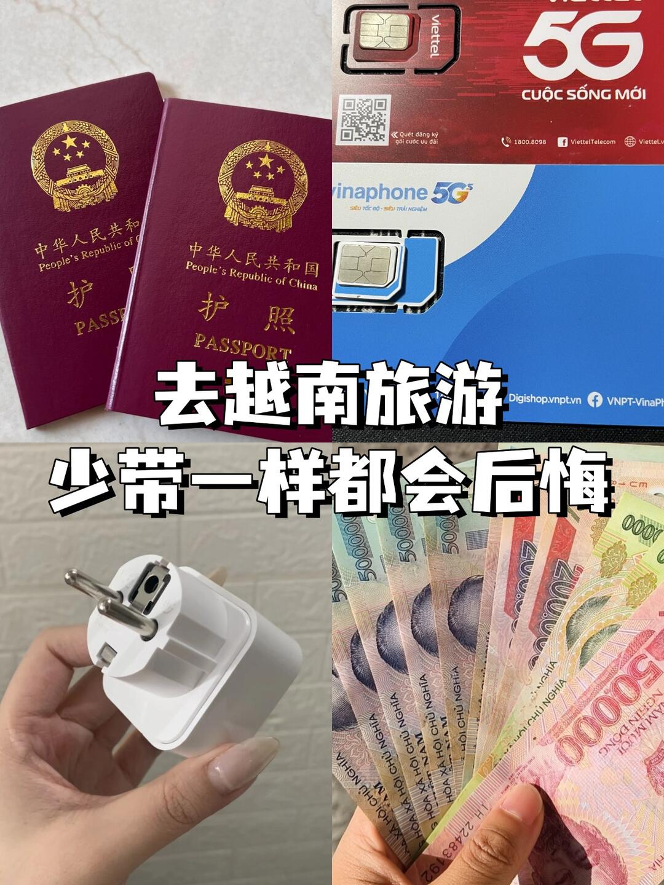
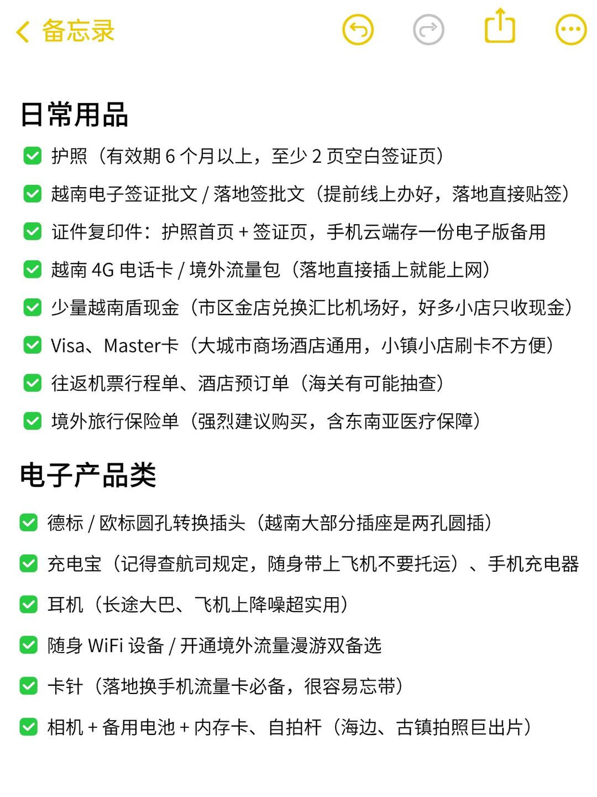
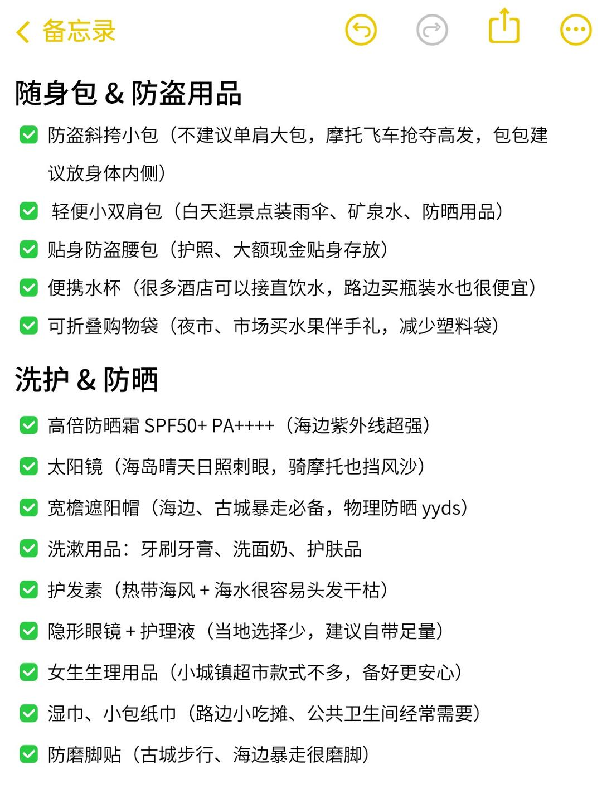
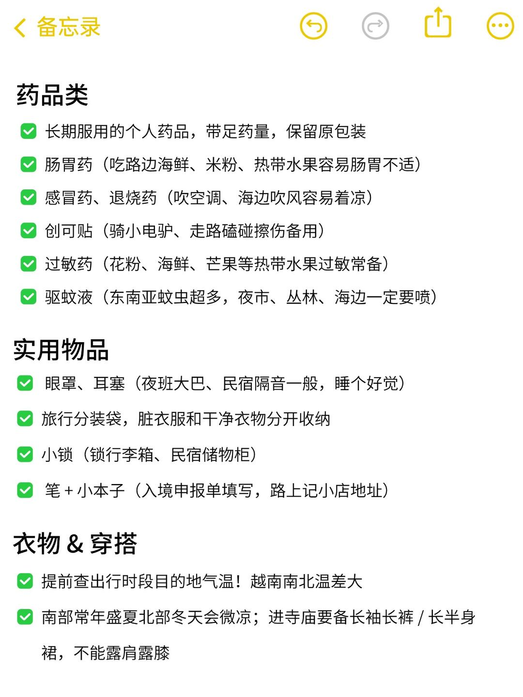
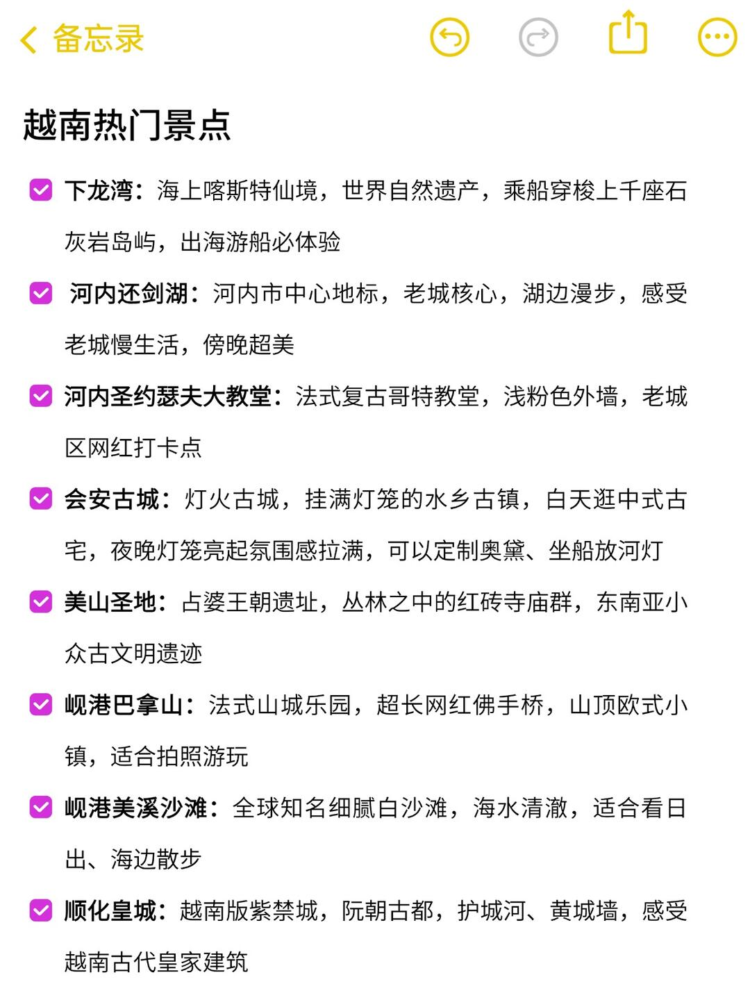
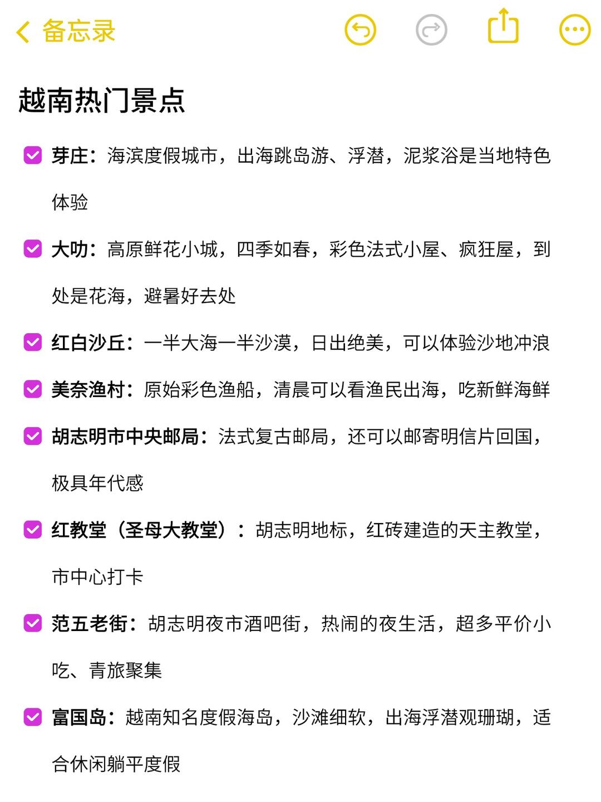
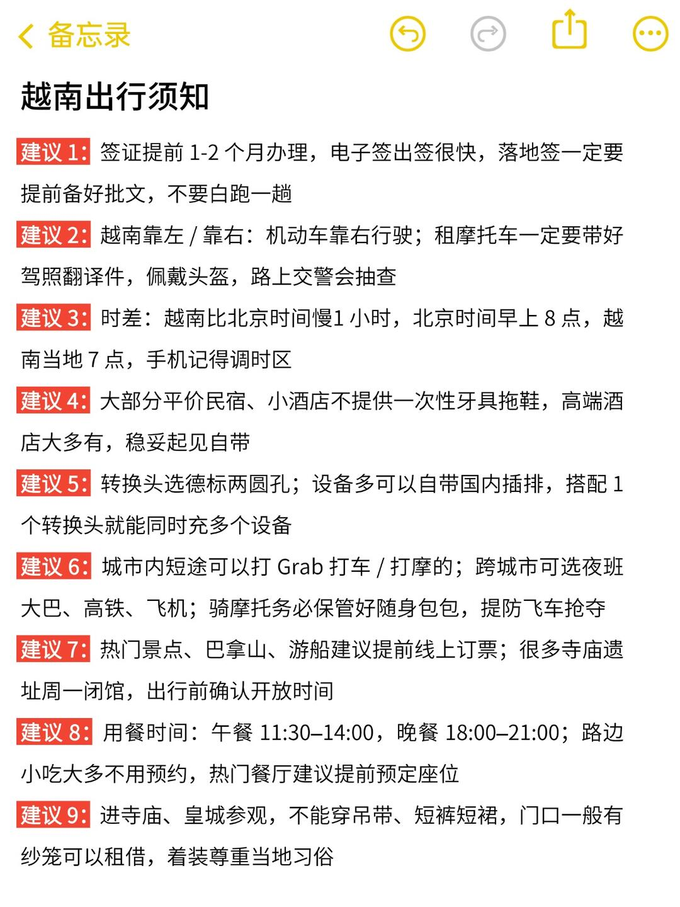
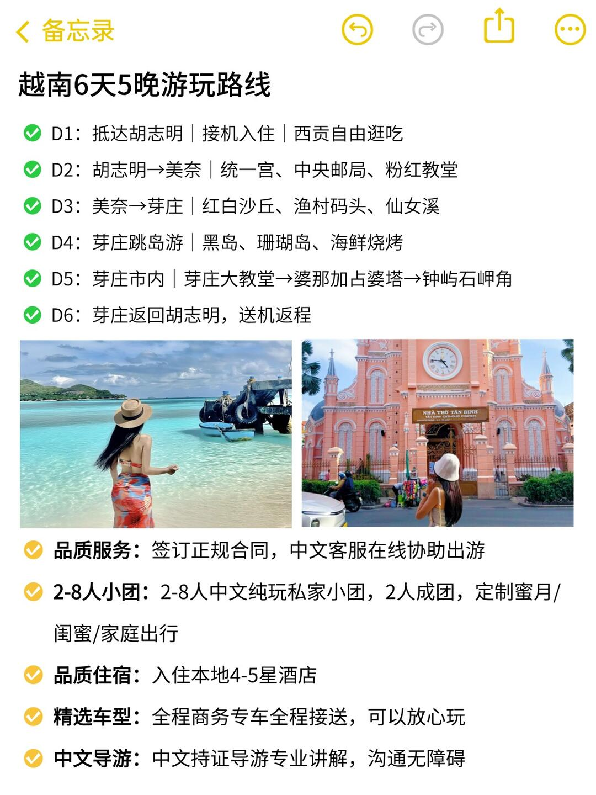

注意事項筆記 · 來自 Obsidian · 2026-10-19 擷取
注意事項｜越南行前必帶清單

來源：越南中文導遊阿光的提醒——出發前務必檢查！
- 護照（有效期 ≥ 6 個月，至少 2 頁空白簽證頁）
- 越南電子簽批文／落地簽批文
- 證件複印件 + 雲端存電子版備用
- 越南電話卡（落地直接上網）
- 少量越南盾現金（小店大多只收現金）
- Visa／Master 卡（大城市商場酒店通用）
- 往返機票行程單、酒店訂單
- 境外旅行保險單
- 德標圓孔轉換插頭
- 充電寶、手機充電器
- 耳機（長途車程降噪）
- 隨身 WiFi／境外流量（雙備選）
- 卡針（換流量卡必備）
- 相機 + 備用電池 + 內存卡、自拍桿
- 防盜斜挎小包（提防飛車搶奪）
- 輕便雙肩包（裝雨傘、防曬用品）
- 貼身防盜腰包（存放護照現金）
- 便攜水杯、可折疊購物袋
- 高倍防曬霜、墨鏡、寬簷帽
- 洗漱用品、護髮素、女生生理用品
- 腸胃藥、感冒藥、創可貼、過敏藥、驅蚊液
- D1：抵達胡志明｜接機入住｜西貢自由逛吃
- D2：胡志明→美奈｜統一宮、中央郵局、粉紅教堂
- D3：美奈→芽莊｜紅白沙丘、漁村碼頭、仙女溪
- D4：芽莊跳島遊｜黑島、珊瑚島、海鮮燒烤
- D5：芽莊市內｜芽莊大教堂→婆那加占婆塔→鐘嶼石岬角
- D6：芽莊返回胡志明，送機返程
📸 實拍（共 8 張）







📌 資料來源：內容與全部 8 張照片來自小紅書實地帖文（Pebble 擷取至 Obsidian，2026-10-19）。
出發前建議以現場或官方最新資訊為準。